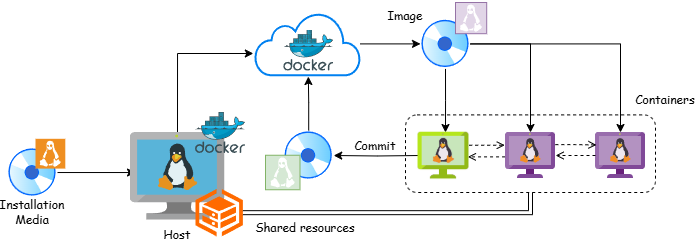

Tutorials (Beginner)
At Artificial Hands Area, we use complex devices to pursue our research on Human-Robot Interaction, particularly teleoperation platforms.
Our platform is composed of the following:
- Robotic arms (Universal Robots)
- Anthropomorphic grippers (Prensilia Mia Hand)
Then on the operator side, we use a collection of motion capture (mocap) devices:
- Wearable IMUs suit (Perception Neuron)
- Exogloves (Senseglove)
- Reflective markers mocap (Optitrack)
In the end, mocap systems allow us to remap human motions on the robotic platform.
Docker
As you can imagine dealing with all of these components at once is non-trivial and requires a lot of programming. To make our life easier, we decided to develop a comprehensive software architecture, so that you only need to plugin/wear the devices and you're ready to go!
Spoiler: We are still developing, thus it's not that easy yet, but it will be!
Have you ever heard the citation "on my computer it works"? It's very common that you will say those words if you ever share your code with your colleagues. Then to prevent them from replying "On mine it doesn't", we decided in our lab not only to share the code but rather the whole pc. How? Virtually. Using Docker containers.
To put it simply, a container is a virtual machine which contains the proper operating system configuration that supports your code. When you're ready to share your code, you send the whole container (well actually a copy of it which is called an Image). Your colleague will just turn on the container to have your code integrated into its own system. And so on. So let's break it down!

The physical pc you're working with has its own (maybe Linux based) operating system (OS), which is called the Host OS. Most likely the Host OS has been installed on your PC by using a physical intallation media, containing a minimal image of the OS itself, let's say it's Ubuntu 22.04.
Now maybe one day you find online some cool piece of software, for instance to collect and process a video stream from USB cameras in order to estimate 6D pose of objects in the camera field-of-view. But oh no, you realize that software runs only on Ubuntu 20.04. What do you do? Do you buy another PC? Expensive. Do you downgrade you're own PC? Not so smart. The answer is Docker!
If you've Docker installed on your host OS, you can use it to collect a virtual installation media, called an image, from the internet (most likely from DockerHub), and use to create virtual machines (VM) called containers.
It's important to undestand some points here:
-
Whatever modification you apply in the container (the VM), like installing a program in it, it will not affect the image (the original installation media)
-
The containers are completely unrelated to each other, they can communicate in some way, but it's like having a lot of different PCs.
-
If you like, you can freeze the container, most likely after you finished to properly setup the programs you were trying to run, doing a commit of the container. This will produce a new image, which extends the original one with your setups, that you may even upload to the hub and use it later a new virtual installation media (or your colleagues can).
Of course, since the containers are basically virtual machines, they can access any device (processors, GPUs and so on) which are properly operated by the host OS.
Linux
To install docker in Linux, you can follow the install using the apt repository guide.
Note: apt is a repository of all packages that you can install on Linux.
As you will notice sudo will require your password, which means that docker requires you to log in as an administrator to run any command, like starting the hello-world container. Asking for your password is fine if you need to install a library once using apt, but it's annoying if you need it for any docker command. So, let's say to docker that you can work with containers also as a non-root (i.e., non-administrator) user.
For this, we create a new group of users
sudo groupadd docker
sudo usermod -aG docker $USER
newgrp docker
docker run hello-world
docker is now seeing that you (user) are part of a group named ... docker, so he's happy and it will let you work without asking for your password!
Finally, you can set Docker Engine to automatically start on boot whenever you turn on your pc.
Windows
In Windows things may look way easier, but remember, Docker will consume a lot of RAM (not really a lot but at least 8 GB), and we only tested with Windows 11 (you can try with 10, and let us know).
Actually, the Docker Engine will run on the Windows Subsystem for Linux (WSL). So you need to run the install WSL command first.
Then simply download and install Docker Desktop (it will include the Engine!).
Open the application and try from the Windows PowerShell
docker run hello-world
ROS
As we have many devices, our platform requires a lot of specialized code (actually executables) to communicate with each of them, for instance to:
- Control the robots (make things move!)
- Read data from mocap devices (understand how they should move!)
Moreover, how each of these specialized executables can communicate? For instance how the program that reads the posture of the human operator can send the information to the robot, to set its joint positions? Lucky us, we can use the Robot Operating System (ROS).
ROS it's not actually an operating system, it's a framework where specialized programs are called nodes. The beauty of nodes is that they can exchange data very easily using ROS communication channels, which are called topics.
Moreover, we do not need to write specialized programs for each device we buy. Since ROS it's a standard in robotics research, vendors typically provide ROS driver packages that you can install with apt. So in this way, the communication with the devices is solved. Our job is to develop our own ROS packages, to connect them.
Make sure you have the prerequisites before starting with the tutorials on usage and programming of ROS applications.
Also, use a proper container to work with the tutorials (extra options are for graphics applications)
docker run \
--volume /tmp/.X11-unix:/tmp/.X11-unix \
--volume ${XAUTHORITY:-$HOME/.Xauthority}:/root/.Xauthority \
--device /dev/dri \
--env DISPLAY=$DISPLAY \
-dit --name jazzy osrf/ros:jazzy-desktop
Windows: Make sure you execute the docker run command from a WSL terminal, which you can access by running the wsl command in a Windows PowerShell.
If you want to open a terminal to execute commands in the container
docker exec -it jazzy bash
sudo authentication.
Note: See in the prerequisites how to use vscode to work within the container.
Whenever you want to take a break or resume your work, you can simply stop/start the container
docker stop jazzy #to stop it
docker start jazzy #to restart it
Prerequisites
C++
As you can imagine you need to write some code to develop ROS packages, which you can do using:
- C++
- Python
C++ it's extremely performant, since it's a compiled language, the code you write is turned into binary instructions before the execution of the program, thanks to a tool which is called ... compiler. However, this comes at the cost of complicated syntax, which means the C++ codes are not easy to understand if you don't have the basics.
On the other side, Python codes are way easier to read and write, but they are poorly performant. Indeed the code is not pre-compiled, but's is interpreted during the execution and sent to the machine again as a set of binary instructions. Things are way slower.
We strongly suggest to learn the C++ basics for three reasons:
- If you understand C++, you will reuse a lot of that knowledge for Python. The opposite doesn't work.
- At a certain point you will find a ROS package (not yours) that you need to adjust to your will, for your specific application. What if they are written in C++?
- What if for your application you realize that Python code is not performant enough?
Bonus: To get confident with docker in the meanwhile, we suggest you create a Linux container where you'll work to learn the basics (thus skip the Introduction part of the video tutorial)
docker run -d -t --name ubuntu ubuntu #start a basic Linux container
docker exec -it ubuntu bash -c 'apt update && apt install g++ -y' #install the C++ compiler, you will need it!
CMake
As you will learn from the video tutorial, you need to manually call the C++ compiler, which is the g++ executable, to turn your human-readable code into binary instructions for the machine. Imagine that your project includes many programs to compile. Do you need to call g++ manually for each file? No, of course, you can use CMake!
CMake is a cross-platform (Windows/Linux) tool that makes the generation of executables easier. No wonder that is the tool you will need to use to compile the code you'll write to form a new ROS package. For this purpose, you will learn to use this tool in the ROS tutorials, but even here a minimum preliminary understanding of CMake is required.
docker exec -it ubuntu bash -c 'apt install cmake -y' #install CMake, you will need it!
Bonus: You can have the official tutorial archive into the container
docker cp /path/to/cmake-4.0.0-rc4-tutorial-source.zip ubuntu:/root/tutorial-source.zip #copy to the container
docker exec -it ubuntu bash -c 'apt install unzip -y' #needed to extract the archive
docker exec -it ubuntu bash -c 'unzip /root/tutorial-source.zip -d /root/tutorial-source' #extract